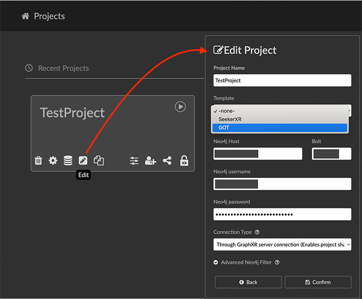
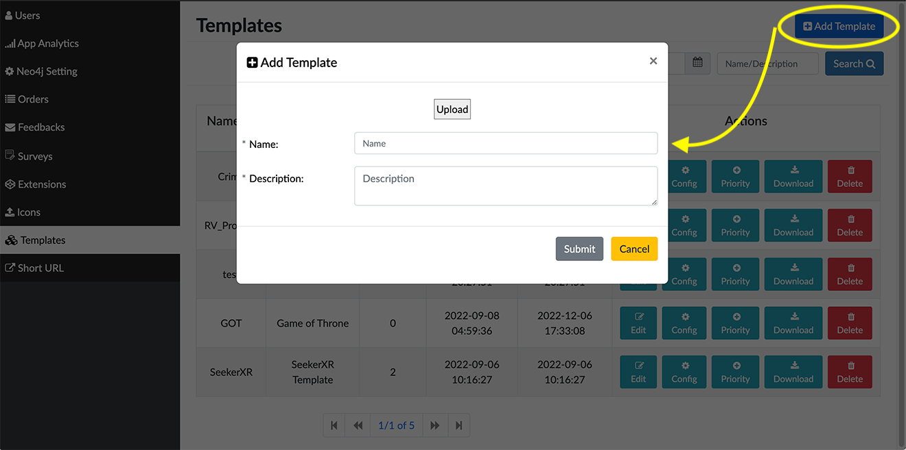
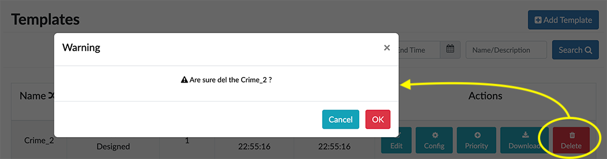
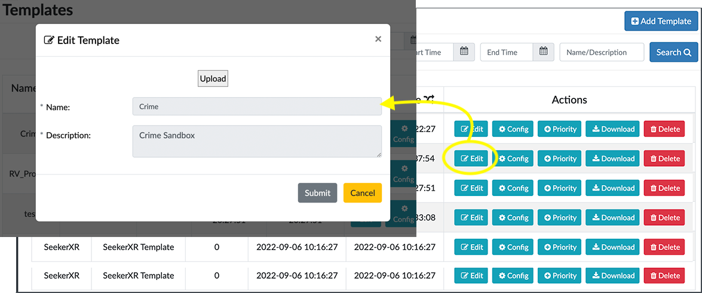
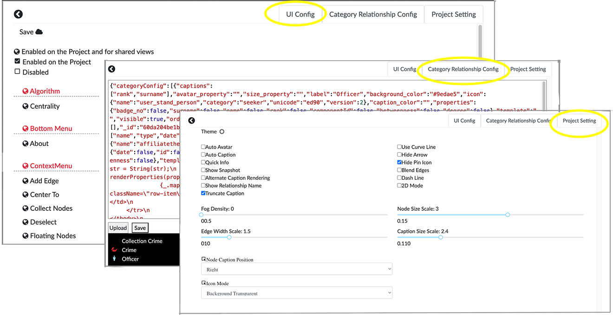
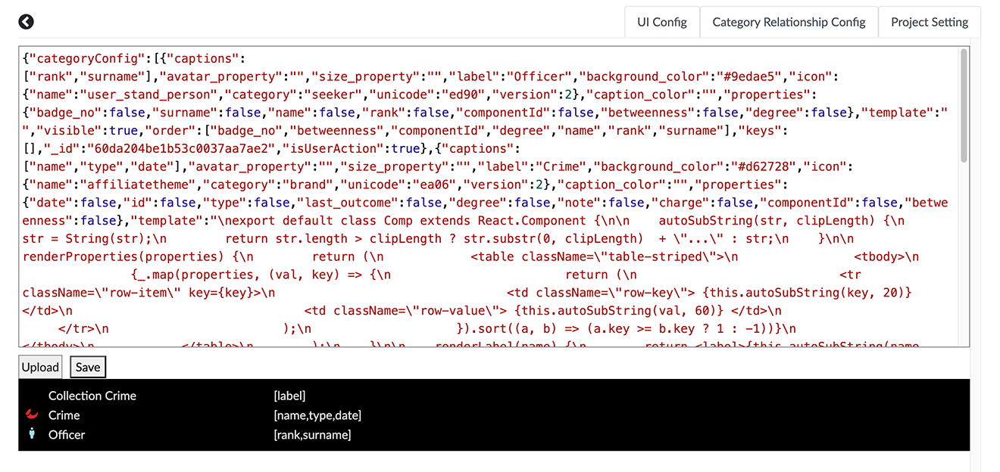
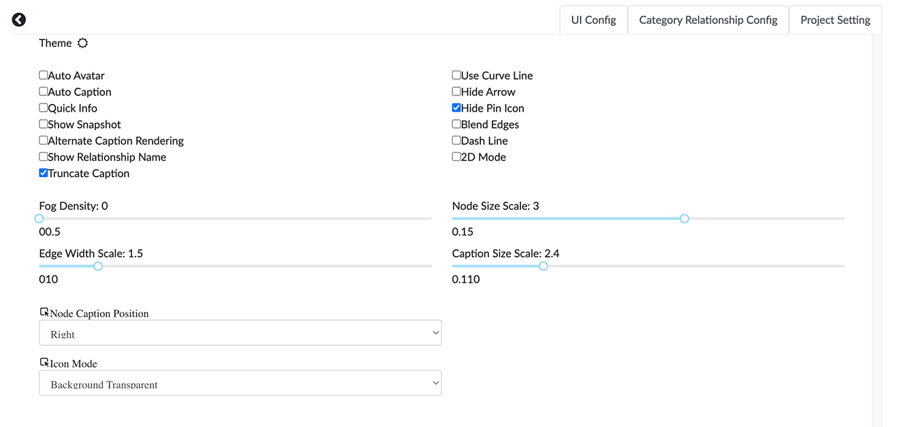
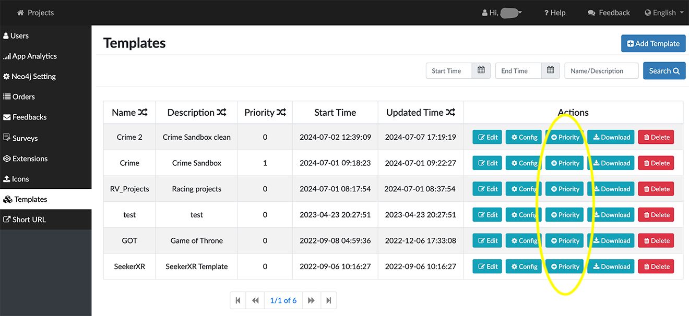
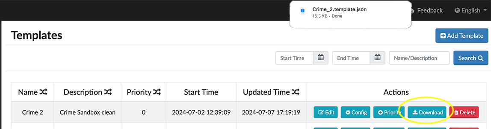

Creating and Managing Project Templates A template saves the current settings in a project, including node and edge sizes, captions, colors, and icons, as well as UI configuration options that control which interface elements are shown or hidden in the project. It enables a user to apply all the current settings to any new or existing project in one step. A template can be created by either: a general user within a project using the Create Template button in the Project > Data tab. an admin user in the Templates panel. As soon as it is created, the template appears on the template menu available when creating or updating a GraphXR project.  The Templates panel enables an admin user to configure and manage the entire set of templates at the server level. Adding or Deleting a template You can add a new template at any time. You can either create a template with a a default configuration which you can then edit, or upload a template .JSON file. To add a template: Click Add Template, and provide a name and description.  Either: Click Upload to navigate to a template file saved on your local system, or Click Submit to create a template with the default configuration. The new template appears on the template list. To delete a template: Click a template’s Delete button. Click OK to confirm deleting the template.  The template is deleted from the list and the template menu. If it could be useful later, you can Download a template to your local system before deleting it. Editing a template For any existing template, you can: Edit the name and upload a template file. Edit its UI configuration, category and relationship settings, and overall project settings. Set a Priority that controls the order in which it appears on the template menu. Download the JSON template file to your local system Edit a template To edit or upload a template: Click a template’s Edit icon. You can: Change the template name if desired. Click Upload to upload a template file from your local system.  Configure a template Template configuration is organized in separate tabs:  UI Config configuration, to grant or deny access to specific UI elements. Category Relationship Config, to edit predefined colors, icons, and captions. Project Setting, to set project-wide settings such as node and edge scale, icon style, caption position, and more. To edit UI Configuration: Click a template’s Config button to open the configuration panel. The UI Config panel is opened by default. Click an item on the list to grant or deny access to specific UI elements. Click any element or group of elements to toggle between: Enabled on the project and for shared views Enabled on the Project, or Disabled. Click Save to save the configuration. By default, extensions are found in the Extensions panel and menu, but you can click any extension to make it visible as a UI button on the left menu. + image::/v2_17/08_07_ProjectTemplates_HideAddExtension.png[,720,420,role=text-left] + For example, with the configuration shown above, the Algorithm panel is hidden, and Visual Query Builder and Grove extensions are placed as icons on the left menu bar. + image::/v2_17/08_08_ProjectTemplates_NewMenu.png[,720,720,role=text-left] To edit a template’s Category and Relationship settings: Click a template’s Config button Open the Category Relationship Config tab.  Optionally, click Upload to navigate to a template file and upload it. Edit the existing styling in the code panel. Click Save to save your changes. To edit a template’s Project settings: Click a template’s Config button Open the Project Setting tab. Choose the initial project Settings just as you would when opening a project. For example,adjust node and edge scale, and display of captions, avatars, arrow and line style, or pin icons, and more.  Click the arrow to return to the Templates panel. Project settings are automatically saved. Set a template’s Priority The template Priority buttons group templates in order of priority on the template menu. Templates within the same priority level are listed in alphabetical order. To set a Priority: Click a template’s Priority button. The button toggles between setting a priority of 0, 1, or 2.  Download a template file To download a template: Click a template’s Download button. A JSON template file is downloaded to your local system. 